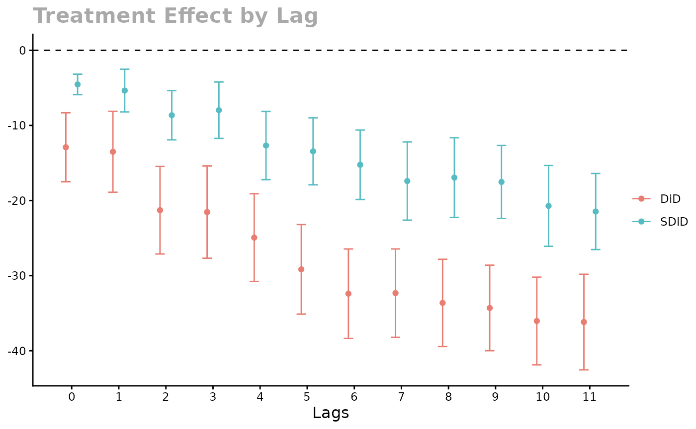

CA_prop99
CA_prop99.Rmd
set.seed(42)
install.packages("didimputation")
library(didimputation)
library(seq.sdid)
data(CA_prop99)
panel <- to_wide(
CA_prop99,
unit = "State", time = "Year",
outcome = "PacksPerCapita",
treatment = "treated"
)
panel_avg <- prepare_wide(panel, "unit")
s2 <- estimate_s2(panel$Y, panel$W)
est <- sequential_estimator(
panel_avg = panel_avg,
level = "unit",
s2 = s2,
type = "both",
aggregate_effect = aggregate_by_weight
)
print(est, 3)## Synthetic DiD:
## -4.540 -5.359 -8.644 -7.973 -12.677 -13.448 -15.239 -17.406 -16.944 -17.526 -20.715 -21.461
##
## DiD:
## -12.904 -13.507 -21.283 -21.536 -24.936 -29.159 -32.399 -32.325 -33.630 -34.299 -36.036 -36.175
##
## s2: 140.152## $se_sdid
## [1] 0.6953516 1.4492435 1.6715692 1.9171410 2.3149952 2.2748125 2.3577442
## [8] 2.6561159 2.7042119 2.4817729 2.7450264 2.5830414
##
## $se_did
## [1] 2.342279 2.749136 2.975044 3.135226 2.981291 3.042277 3.036592 2.999929
## [9] 2.964259 2.904075 2.977970 3.247274
plot(
est, se, NULL,
error_bar_width = 0.4, xlab = "Lags",
legend_position = "right"
)
library(didimputation)
library(data.table)
data.table::setDT(CA_prop99)
CA_prop99[, "g"] <- 0
CA_prop99[State == "California", "g"] <- 1989
CA_prop99[State == "Wyoming", "g"] <- 1993
did_imputation(
data = CA_prop99,
idname = "State",
tname = "Year",
yname = "PacksPerCapita",
gname = "g",
horizon = TRUE
)## # A tibble: 12 × 6
## lhs term estimate std.error conf.low conf.high
## <chr> <chr> <dbl> <dbl> <dbl> <dbl>
## 1 PacksPerCapita 0 -9.12 2.31 -13.7 -4.59
## 2 PacksPerCapita 1 -7.69 2.53 -12.6 -2.74
## 3 PacksPerCapita 2 -10.2 2.68 -15.4 -4.92
## 4 PacksPerCapita 3 -11.7 2.73 -17.0 -6.35
## 5 PacksPerCapita 4 -14.5 2.68 -19.8 -9.28
## 6 PacksPerCapita 5 -19.2 2.70 -24.5 -13.9
## 7 PacksPerCapita 6 -18.1 2.76 -23.5 -12.7
## 8 PacksPerCapita 7 -22.6 2.91 -28.3 -16.9
## 9 PacksPerCapita 8 -33.7 3.01 -39.6 -27.8
## 10 PacksPerCapita 9 -34.5 2.92 -40.3 -28.8
## 11 PacksPerCapita 10 -36.1 2.97 -42.0 -30.3
## 12 PacksPerCapita 11 -36.5 3.25 -42.9 -30.1